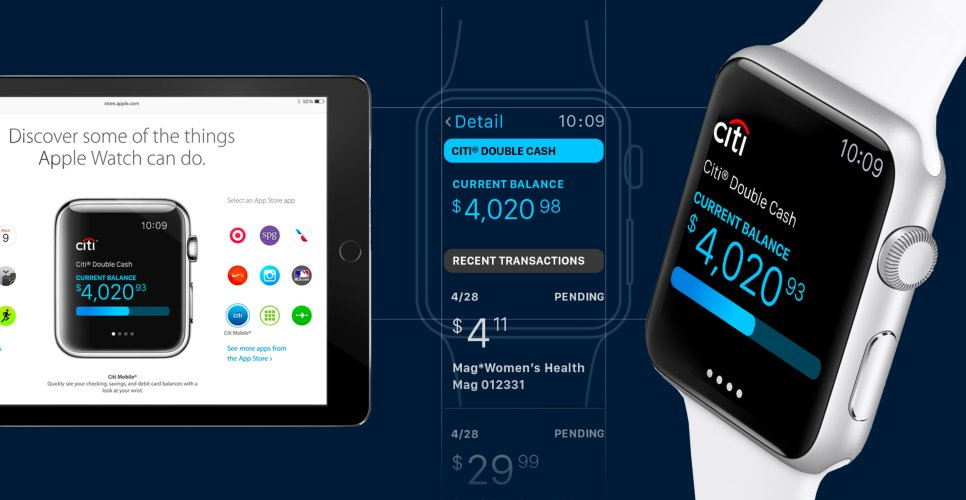
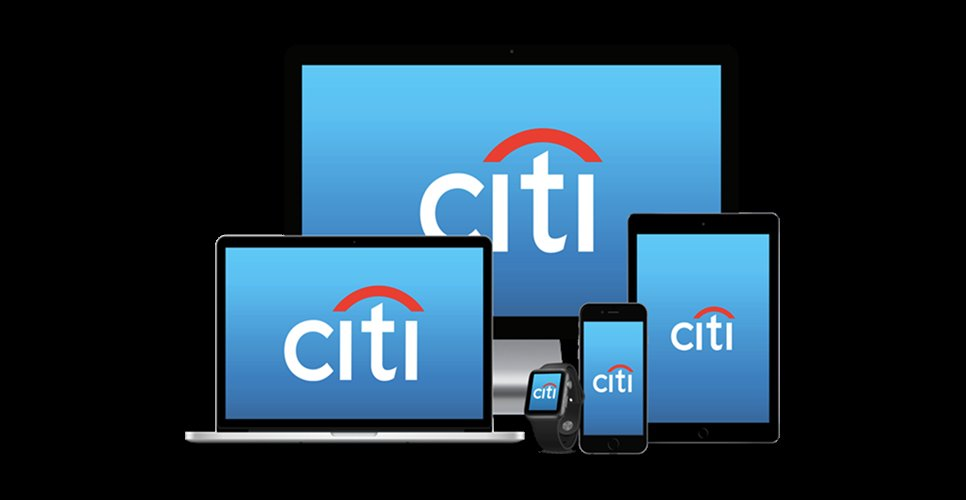
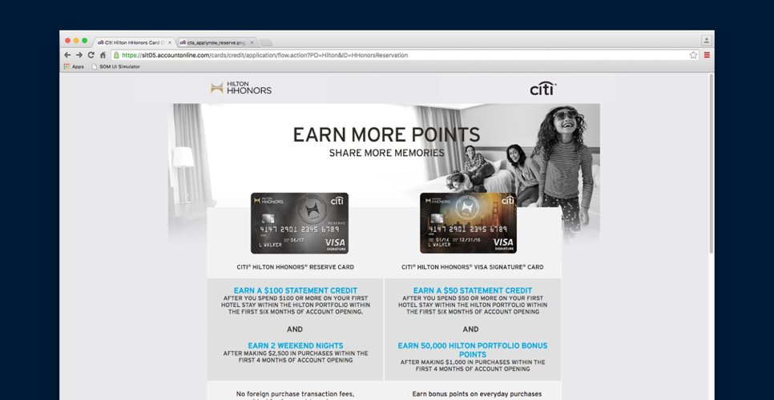

At one of the world's largest banks, digital properties lacked a shared system, and the first Apple Watch app was uncharted territory, in a domain where trust and precision are everything.
Citi's digital products had drifted (every team solving the same problems a slightly different way) right as the bank stepped into brand-new territory with its first wearable.
In banking, trust and precision aren't nice-to-haves; they're the product. Everything I shipped had to be rigorous enough to bet money on and reusable enough to scale across the bank.

I shipped Citi's first Apple Watch app on the platform's launch day. Glance-level account info, send and receive, and the restraint that wrist-sized interactions demand. Apple featured the app on Apple.com when it went live.

I led the bank-wide design system and the standards organization around it. Tokens, components, and patterns shipped from one source. The harder part was the org: governance, contribution workflow, and a way for product teams to ship without inventing a snowflake every time.

I led the design on the co-branded card partnerships: American Airlines AAdvantage and Hilton Honors. Two brands, two product experiences, one consistent quality bar. The cards live in physical and digital form, and the design had to land in both.